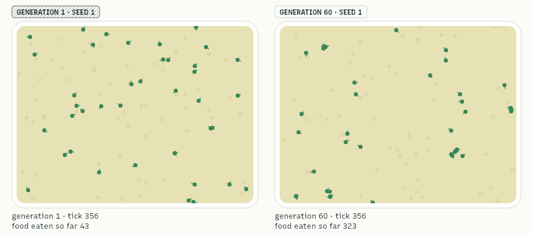
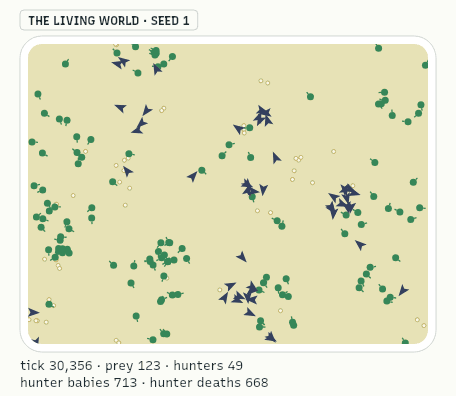
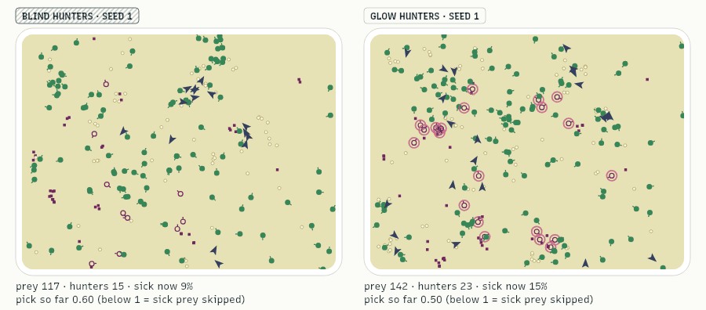
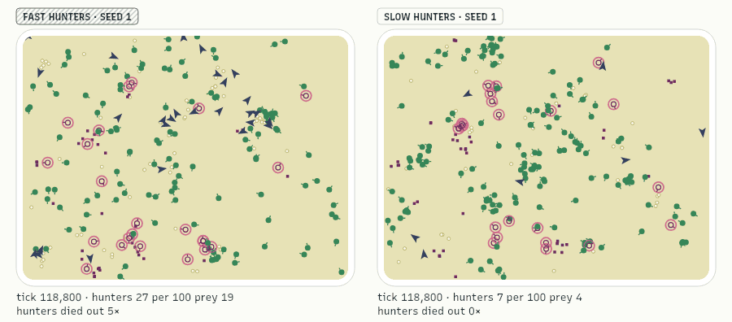
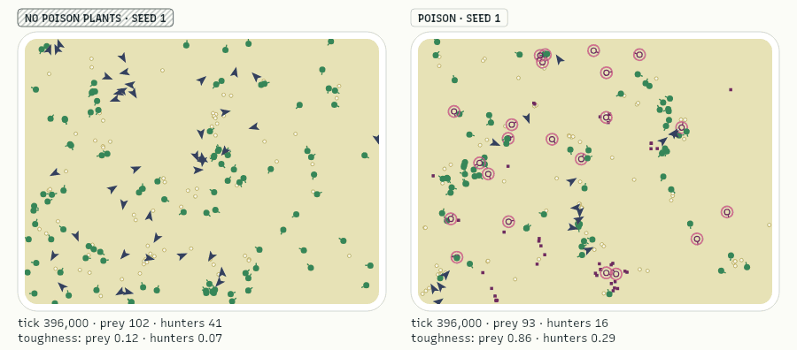
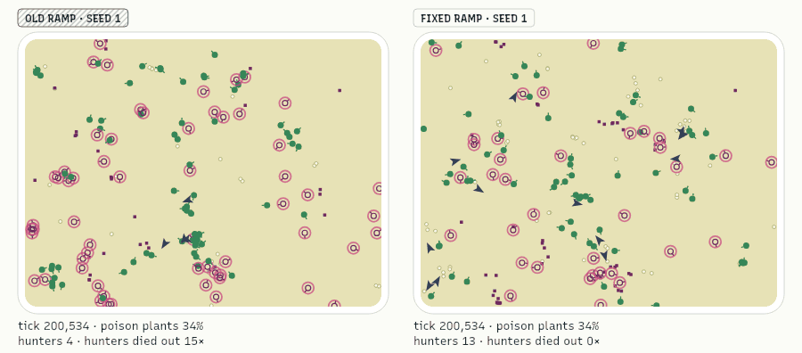
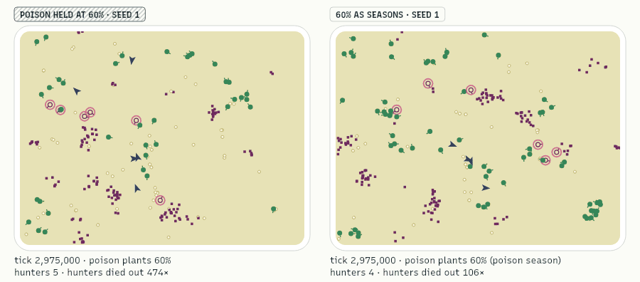

Six weeks, one small world, and a question: can a tiny brain plus evolution find answers nobody wrote? And do those answers hold up the way nature does? A five-minute read. Every number comes from the lab log; the full report shows each test.
By Rey Milson · Nov 2026
Nobody tells these creatures how to find food. Evolution has to.

It starts as a dish. Small creatures, each with a brain of a few connections, wander around looking for food. Nobody writes the rules. The ones that eat well have children, the children copy their brains with small changes, and the rest fade out.
At first the scores were mostly luck: a good creature on one food map was a poor one on the next. So every generation got three maps. After that, real skill showed. The creatures learned to find food, by evolution alone.
Like learning to cook with no recipe: you only keep the dishes that taste good.
Next: food that doesn't run away is easy. So we gave them something to run from.
Prey had nothing to run from. So we gave them hunters.

Hunters got brains too, and an arms race began. Late hunters caught 87% of early prey, but only 56% of late prey: both sides kept getting better against each other.
Then the bigger change. Until now a judge picked the best brains each generation. We took the judge away. In the living world, prey and hunters eat, have young and die on their own, all the time. Nobody scores anyone.
Like a game of tag where both sides keep getting faster.
Next: a world that runs itself needs a reason to struggle. Poison was that reason.
The prey forgot about poison. So poison started moving up the chain.

Some plants were poison, and the prey kept eating them. Rey's verdict: “they just forget about poison”. So we let poison stay in the body: a prey that ate poison became sick, and a hunter that ate a sick prey got the poison too.
Now the hunters kept dying out. We gave them a clue: sick prey glow. In 11 of 14 worlds, glow hunters dodged sick prey more than blind ones. They still didn't end up more numerous.
Along the way we built a game for four days. It wasn't fun yet: “the logic is there but not the fun”. We went back to the lab.
Like DDT in birds of prey: poison passed up a food chain hits the top hardest.
Next: maybe the hunters weren't failing. Maybe the world was too fast.
Creatures lived short, jumpy lives. Nature doesn't work like that.

A hunter caught about two prey in its whole life and died soon after. Rey: “creatures die too fast”. So we slowed the hunters down: they burn energy four times slower, and each catch gives four times less.
Hunter die-outs fell 3 to 7 times. The world started to look like a food pyramid, with fewer hunters on top of many prey. And we gave everyone a resistance gene: toughness against poison you are born with, which costs energy every tick.
Like a bear and a shrew. The shrew must eat every few hours; the bear eats big and can wait.
Next: the hunters still weren't winning. Maybe we were asking the wrong question.
We kept asking hunters to become more numerous. Nature doesn't ask that.

In nature a better hunter doesn't end up more numerous: it eats its prey down. And animals meet toxic prey in two ways. They avoid them, or they resist them. Rey's call was two words: “by nature”.
So the test changed. Do both sides live on? Do prey resist more than in a world without poison? Do hunters dodge or resist more? Do hunters stay fewer than prey? Over 400,000 ticks, all four held: the world worked in 14 of 14, and hunters ended up tougher than in the no-poison world in 12 of 14.
Like garter snakes and toxic newts: in some places the snakes resist fully, in others barely.
Next: steady poison was solved. Real worlds don't stay steady.
Rising poison kept breaking the hunters. Then a test that did nothing found the real problem.

When poison rose, the hunters broke at about a third poison plants, in 0 of 6 worlds. Even a rise ten times slower only half worked. Rey thought they needed time: “it's not poison too potent, but hunters evolve too slow as they are slow”.
So we ran a test where the poison never moved at all. The hunters still lost a quarter to a third of their numbers. The tool that raised the poison was broken. It kept moving poison plants to random spots, so nobody could learn where they were.
We fixed it, and the verdicts flipped. The slow rise now works in 13 of 14, again in 13 of 14 brand-new worlds, and prey and hunters grow tougher than without poison in 13 of 14.
Like mines moved every night: you can't learn a map that keeps changing.
Next: if hunters can handle poison that rises, what about poison that comes and goes?
Real years have seasons. So poison got seasons too.

Poison went up and down: normal, poison, normal, poison. As a switch or as a slow tide, the world worked in 14 of 14. Held at 60% for good, nearly every world broke (1 of 6 worked). As seasons, 60% worked in 14 of 14: the clean seasons gave the hunters a rest. The second poison season hurt less, because the hunters dodged more (a hint from 6 worlds).
One twist didn't work. When every plant was packed into two farms for part of the year, the world worked in only 9 of 14. The farms themselves broke it, mostly the prey. We don't know why yet, so farms are parked.
Like a boxer between rounds: the same punches, with a minute to breathe.
Nobody told the hunters how to handle poison. Evolution found two answers on its own: grow tough, or learn to dodge. Most worlds leaned one way. Where senses could evolve, hunters that saw sickness dodged more, and blind hunters grew tougher instead. Nature shows the same split.
It holds up within limits. Steady poison, rising poison and poison seasons all pass. Poison held above about half the plants breaks the hunters, and the farm seasons are still unsolved.
The biggest lesson wasn't about the creatures. Four "failed" results flipped once we fixed the test or asked the right question. Checking the test was worth as much as waiting longer.
Every test, number and dead end is in the full report.